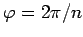
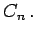
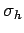
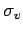
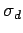
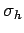
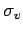
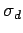

Symmetrieoperationen, Symmetrieelemente
Unter einer Symmetrieoperation s eines räumlichen Objekts versteht man eine Abbildung des gesamten Raumes in sich, bei der die Streckenlängen unverändert bleiben und das Objekt mit sich zur Deckung kommt. Mit Fix s wird die Menge aller Fixpunkte der Symmetrieoperation s bezeichnet, d.h. die Menge aller Punkte des Raumes, die bei s festbleiben. Fix s heißt das Symmetrieelement von . Zur Bezeichnung der Symmetrieoperation wird die in der Chemie übliche SCHOENFLIESS-Symbolik verwendet (s. Lit. 5.17).
Man unterscheidet zwei Typen von Symmetrieoperationen, Operationen ohne Fixpunkt und Operationen mit mindestens einem Fixpunkt.
- 1. Symmetrieoperationen ohne Fixpunkt,
- bei denen kein Punkt des Raumes fest bleibt, können bei begrenzten räumlichen Objekten, und nur solche sollen hier betrachtet werden, nicht auftreten. Eine Symmetrieoperation ohne Fixpunkt ist z.B. eine Parallelverschiebung.
- 2. Symmetrieoperationen mit mindestens einem Fixpunkt
- sind z.B. Drehungen und Spiegelungen. Zu ihnen gehören folgende Operationen:
- a) Drehungen bezüglich einer Achse um einen Winkel
 :
:
- Für  bezeichnet man sowohl die Drehachse als auch die Drehung selbst mit  Die Drehachse heißt dann n-zählig.
- b) Spiegelungen an einer Ebene:
- Sowohl die Spiegelungsebene als auch die Spiegelung selbst werden mit
 bezeichnet. Ist zusätzlich eine Hauptdrehachse vorhanden, so zeichnet man diese senkrecht und bezeichnet Spiegelungsebenen, die senkrecht auf dieser Achse stehen, mit  (h von horizontal) und Spiegelungsebenen, die durch die Drehachse gehen, mit  (v von vertikal) oder  (d von dihedral, wenn dadurch gewisse Winkel halbiert werden).
bezeichnet. Ist zusätzlich eine Hauptdrehachse vorhanden, so zeichnet man diese senkrecht und bezeichnet Spiegelungsebenen, die senkrecht auf dieser Achse stehen, mit  (h von horizontal) und Spiegelungsebenen, die durch die Drehachse gehen, mit  (v von vertikal) oder  (d von dihedral, wenn dadurch gewisse Winkel halbiert werden).
- c) Drehspiegelungen:
- Eine Operation, die dadurch entsteht, daß nach einer Drehung Cn eine Spiegelung erfolgt, heißt Drehspiegelung und wird mit Sn bezeichnet. Drehung und Spiegelung sind dabei vertauschbar. Die Drehachse heißt dann Drehspiegelungsachse n-ter Ordnung und wird ebenfalls mit Sn bezeichnet. Diese Achse nennt man zugehöriges Symmetrieelement, obwohl bei der Anwendung der Operation Sn nur das Symmetriezentrum fest bleibt. Für n=2 heißt eine Drehspiegelung auch Punktspiegelung oder Inversion und wird mit i bezeichnet.